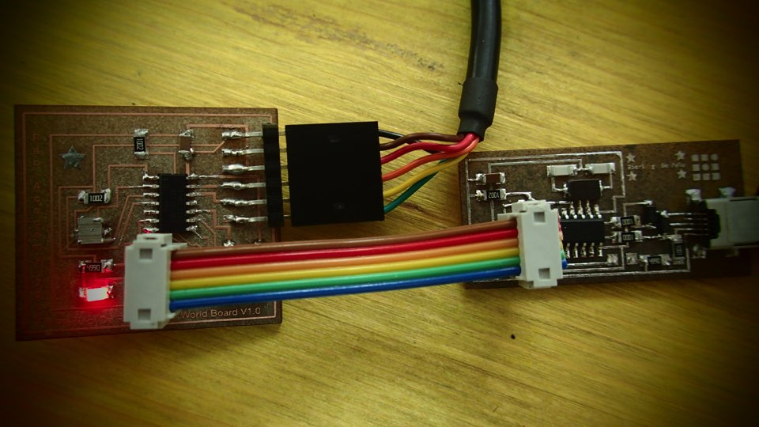

****************************************************************************************************************
ASSIGNMENT: READ A MICROCONTROLLER DATA SHEET // PROGRAM YOUR BOARD TO DO SOMETHING
PROJECT: PROGRAM THE HELLO WORLD BOARD AND EMBEDDED PROGRAM WITH FAB ISP
SOFT: MAC OS TERMINAL
TUTORIAL: MASSIMO MENICHINELLI FAB ACADEMY 2012 EXERCISE: EMBEDDED PROGRAMMING // TERMINAL
DATASHEET: ATTINY 44
DOWNLOAD:
****************************************************************************************************************

This week we have certanly the more difficult assignments that we have since the biginning of Fab Academy.
We need read the DATASHEET of ATTINY 44 microcontroller at first and give ours comment about it.
It's the first time that i look the specification of a electronic componet. And is not really easy to understand :on reallity is complitly crazy and i start to think that i'm in the bad place.'m not electronics engenier and i have a old brain :-)
After a little time of pause, and after try to reading same general information about the "nature and History of micocontroller" in wikipedia, i try to do a comparison between the pin out find in the datashee of ATTINY 44 micro and the schematics of my Hello Boardboard.
The Attiny 44 is the microrocontroller of the "Hello Board" that we do in last week


I understand that of course, the same pins that i find in the DataSheet of Attiny will be used for comunicate with auther part of elecrtonics component in the bord.
Each pin of microcontroller is a kaind of door: the comunication of informations , will pass by elecrtical signal, running longer the road traces of the pcb board. On reality electronis is just one history of electricity. Inside of a microcontroller we have a lot of transistor.The transistor is a sort of elecrtcal swich: on or off. Better, 0 or 1 : is the binary lenguage. In each microcontroller we have thousen and thousen of transistor. I think that in the recent one maybe millions of transistor. Theyn open and close the swichs for doing inside same Each pin recive informations
PROJECT=steadyled
SOURCES=$(PROJECT).c
MMCU=attiny44
F_CPU = 20000000
CFLAGS=-mmcu=$(MMCU) -Wall -Os -DF_CPU=$(F_CPU)
$(PROJECT).hex: $(PROJECT).out
avr-objcopy -O ihex $(PROJECT).out $(PROJECT).c.hex;\
avr-size --mcu=$(MMCU) --format=avr $(PROJECT).out
$(PROJECT).out: $(SOURCES)
avr-gcc $(CFLAGS) -I./ -o $(PROJECT).out $(SOURCES)
program-bsd: $(PROJECT).hex
avrdude -p t44 -c bsd -U flash:w:$(PROJECT).c.hex
program-dasa: $(PROJECT).hex
avrdude -p t44 -P /dev/ttyUSB0 -c dasa -U flash:w:$(PROJECT).c.hex
program-avrisp2: $(PROJECT).hex
avrdude -p t44 -P usb -c avrisp2 -U flash:w:$(PROJECT).c.hex
program-avrisp2-fuses: $(PROJECT).hex
avrdude -p t44 -P usb -c avrisp2 -U lfuse:w:0x5E:m
program-usbtiny: $(PROJECT).hex
avrdude -p t44 -P usb -c usbtiny -U flash:w:$(PROJECT).c.hex
program-usbtiny-fuses: $(PROJECT).hex
avrdude -p t44 -P usb -c usbtiny -U lfuse:w:0x5E:m
program-dragon: $(PROJECT).hex
avrdude -p t44 -P usb -c dragon_isp -U flash:w:$(PROJECT).c.hex
---
#include
#include
#include
void delay_ms(uint16_t ms);
void init_io();
int button_is_pressed();
void toggle_led();
#define F_CPU 20000000UL /* 20MHz crystal oscillator */
#define BUTTON_PORT PORTA /* PORTx - register for button output */
#define BUTTON_PIN PINA /* PINx - register for button input */
#define BUTTON_BIT PA3 /* bit for button input/output */
#define LED_PORT PORTA /* PORTx - register for LED output */
#define LED_BIT PA7 /* bit for button input/output */
#define LED_DDR DDRA /* LED data direction register */
#define DEBOUNCE_TIME 25 /* time to wait while "de-bouncing" button */
#define LOCK_INPUT_TIME 250 /* time to wait after a button press */
int
main (void)
{
init_io();
while (1)
{
if (button_is_pressed())
{
toggle_led();
}
}
}
void delay_ms(uint16_t ms) {
while ( ms )
{
_delay_ms(1);
ms--;
}
}
void
init_io()
{
/* set LED pin as digital output */
LED_DDR = _BV (LED_BIT);
/* led is OFF initially (set pin high) */
LED_PORT |= _BV(LED_BIT);
/* turn on internal pull-up resistor for the switch */
BUTTON_PORT |= _BV(BUTTON_BIT);
}
int
button_is_pressed()
{
/* the button is pressed when BUTTON_BIT is clear */
if (bit_is_clear(BUTTON_PIN, BUTTON_BIT))
{
delay_ms(DEBOUNCE_TIME);
if (bit_is_clear(BUTTON_PIN, BUTTON_BIT)) return 1;
}
return 0;
}
void
toggle_led()
{
LED_PORT ^= _BV(LED_BIT);
}
-----
COMMAND : MAKE
MacBook-Pro-de-Luigi-3:~ Pierluigi$ cd Downloads/steadyled
MacBook-Pro-de-Luigi-3:steadyled Pierluigi$
"make"
MacBook-Pro-de-Luigi-3:embedding PierluigiS make
avr-objcopy -0 ihex hello_world_blinking_by_massimo.out hello_world_blinking_by_massimo.c.hex:\
avr-size --mcu=attiny44 --format=avr hello_world_blinking_by_massimo.out
AVR Memory Usage
Device: attiny44
Program: 140 bytes (3.4% Full)
(.text + data + .bootloader)
Data: 0 bytes (0.0% Full)
(.data + .bss + .noinit)
COMMAND : MAKE PROGRAM USBTINY FUSE
---
"make program-usbtiny" to program the board
MacBook Pro de Luigi 3:embedding PierluigiS make program usbtiny.fuses
avr-objcopy -0 ihex helloworld_bl inking_ by mass Imo .out helloyorldblinking_bymassimo.c.hex:,
avr size mcu attiny44 -format avr hello world blinking by mass)mo.out
AVR Memory Usage
Device: attiny44
Program: 140 bytes (3.4% Full)
(.text • data .bootloaden
Data: 0 bytes (0.0% Full>
.data - .bss • .noinit)
avrdude p t44 P usb -c usbt)ny U lfuse:w:Ox5E:m
avrdude: AVR device initialized and ready to accept instructions
Reading | ################################################## | 100% 0.00s
avrdude: Device signature - 0x1e9207
avrdude: reading input file "OxSE"
avrdude: writing lfuse bytes):
Writing | ################################################## | 100% 0.00$
avrdude: 1 bytes of lfuse written
avrdude: verifying I fuse memory against OxSE:
avrdude: load data lfuse data from input file OxSE:
avrdude: input file Ox5E contains 1 bytes
avrdude: reading on chip lfuse data:
Reading | ################################################## | 100% 0.00s
avrdude: verifying ...
avrdude: 1 bytes of lfuse verified
avrdude: safemode: Fuses OK (H:FF. E:DF. L:SE)
avrdude done. Thank you.
COMMAND : MAKE PROGRAM USBTINY
With "Make Program Usbitiny" we upload the code
MacBook-Pro-de-Lutgl-3:embedding PierluigiS make program-usbtfny
avr-objcopy -0 thex helloworld_blinking_by_massimo.out hello_world_blinking_by_massimo.c.hex:\
avr-size --mcu=attiny44 --format=avr hello_world_blinking_by_massimo.out
AYR Memory Usage
----------------
Device: attiny44
Program: 140 bytes (3.4% Full)
(.text + data + .bootloader)
Data: 0 bytes (o.es Full)
(.data + .bss + .noinit)
avrdude -p l44 -P usb -c usbtiny -U flash:whello_world_blinking_by_massimo.c.hex
avrdude: AYR device initialized and ready to accept instructions
Reading | ################################################## | 166% 0.66s
avrdude: Device signature . 6x1e9207
avrdude: NOTE: "flash" memory has been specified, an erase cycle will be performed
To disable this feature. specify the -D option.
avrdude: erasing chip
avrdude: reading input file "helloworldblinking_by_massimo.c.hex"
avrdude: input file hello_world_blinking_by_massimo.c.hex auto detected as Intel Hex
avrdude: writing flash (140 bytes):
Writing | ################################################## | 100% 0.20s
avrdude: 140 bytes of flash written
avrdude: verifying flash memory against hello_world_blinking_by_massimo.c.hex:
avrdude: load data flash data from input file hello_world_blinking_by_massimo.c.hex:
avrdude: input file hello_world_blinking_by massimo. c.hex auto detected as Intel flex
avrdude: input file hello worldla inking by massimo.c.hex contains 140 bytes
avrdude: reading on chip Ilash data:
Reading | ################################################## | 0.27s
avrdude: verifying ...
avrdude: 140 bytes of flash verified
avrdude: salemode: Fuses OK (H:FF. E:OF. L:SE)
avrdude done. Thank you.
TEST: WOW!! IT'S WORK!!!